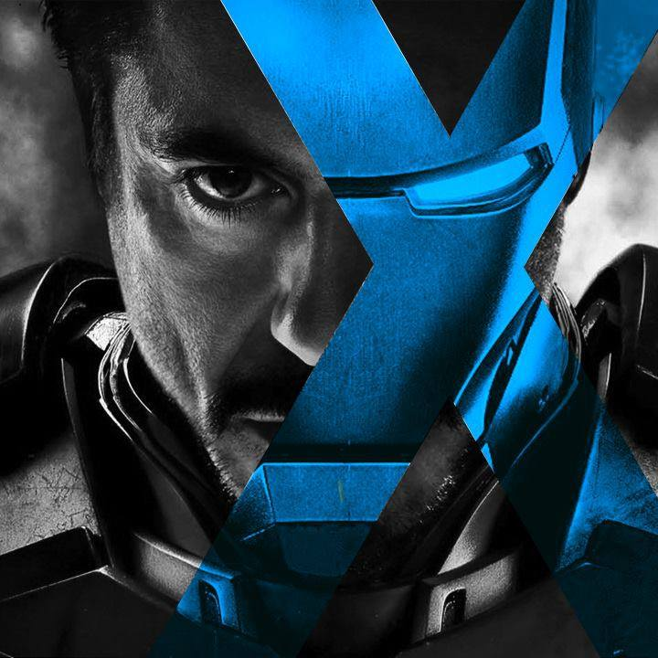

LIÊN HỆ
 Hoa Kỳ
Hoa Kỳ
 ironman@stark.us
ironman@stark.us
 +105179401
+105179401
HỌC TẬP
Bỏ học
MỤC TIÊU
Tiêu hết tiền vì quá giàu
GIỚI THIỆU
Anthony Edward "Tony" Stark, con trai của một nhà công nghiệp và người đứng đầu của Stark Industries, Ned Stark, và Maria Stark, được sinh ra ở Long Island. Là một cậu bé thiên tài, anh vào học M.I.T ở tuổi 15 để học ngành kỹ thuật điện và sau đó nhận bằng Thạc sĩ về kỹ thuật điện và vật lý. Sau khi cha mẹ bị chết trong một tai nạn xe hơi, ông được thừa hưởng công ty của cha mình. Stark có người bạn thân là một sĩ quan Mỹ, tên là James "Rhodey" làm việc trong bộ quốc phòng.
KINH NGHIỆM
- Iron Man 2008
- Iron Man 2 2010
- End Game 2019
KỸ NĂNG
- Trí tuệ ở mức thiên tài
- Bậc thầy trong khoa học và thiết kế, xây dựng máy móc
- Trí tuệ ở mức thiên tài
- Sức mạnh siêu nhân và siêu kháng cự
- Bay với tốc độ siêu âm
- Phóng ra năng lượng và tên lửa
- Hỗ trợ phục hồi sự sống